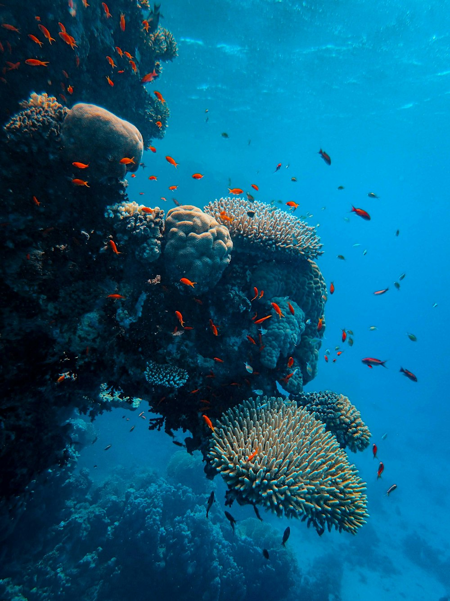
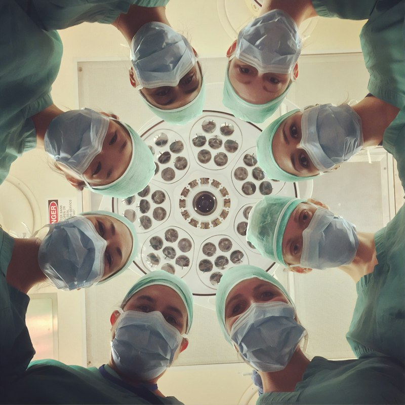
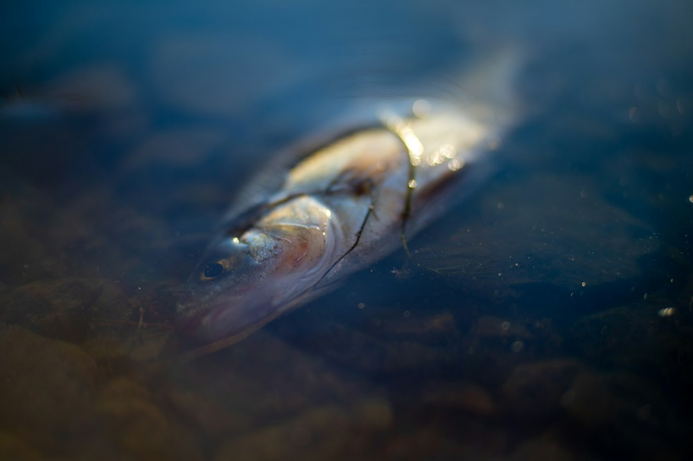

Reliable by Design
Every motor, feed formulation, and test kit is benchmarked for tropical aquaculture environments.
AquaHarvest bridges the gap between scientific marine biology and daily farm operations, providing fish farmers, hatcheries, and aquatic growers with dependable supplies and hands-on guidance.
AquaHarvest was founded with a straightforward mission: to eliminate the costly guesswork from commercial fish farming. By combining field-tested aeration equipment, balanced bio-secure feeds, and digital water quality monitoring, we empower growers to achieve higher survival rates and predictable harvest weights.
Our approach is grounded in biological integrity, practical learning, and deep respect for freshwater and coastal water environments.
Connect with our advisory team →
Every motor, feed formulation, and test kit is benchmarked for tropical aquaculture environments.
We listen to your pond biology, species stock, and water parameters before recommending any equipment.
We champion zero-discharge recirculation systems, low-waste feeds, and antibiotic-free probiotics.

Our central testing facility in Tamil Nadu features dedicated water chemistry laboratories, pilot biofloc tanks, and recirculating aquaculture systems (RAS). Here, our team tests feed solubility, aeration oxygen transfer coefficients, and probiotic efficacy.
Our multi-disciplinary team brings together marine biologists, water quality chemists, and aquaculture engineers.

Ph.D. in Aquatic Pathology with 18+ years optimizing disease prevention in commercial fish hatcheries.

Specialist in recirculating aquaculture systems (RAS) and biofloc microbial management.

20 years directing large-scale freshwater and brackish pond operations and aeration logistics.

Focuses on fingerling nutrition, broodstock acclimatization, and early-stage fry survival.
Sustainable aquaculture is essential to meet growing protein needs while protecting natural rivers, lakes, and oceans.

Formulations with high digestibility reduce nitrogen and phosphorus excretion into local waterways.

All disease defense solutions utilize competitive exclusion probiotics and botanical immune stimulants.

We help farms implement recirculating aquaculture systems (RAS) that reduce water consumption by up to 90%.
Reach out for on-site consultation, feed trials, and water testing services.